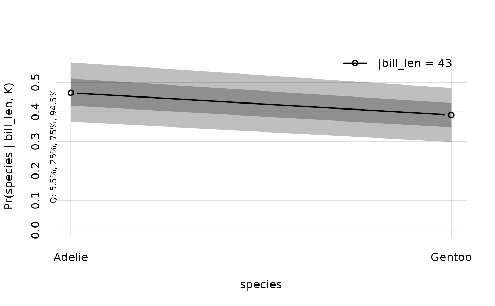
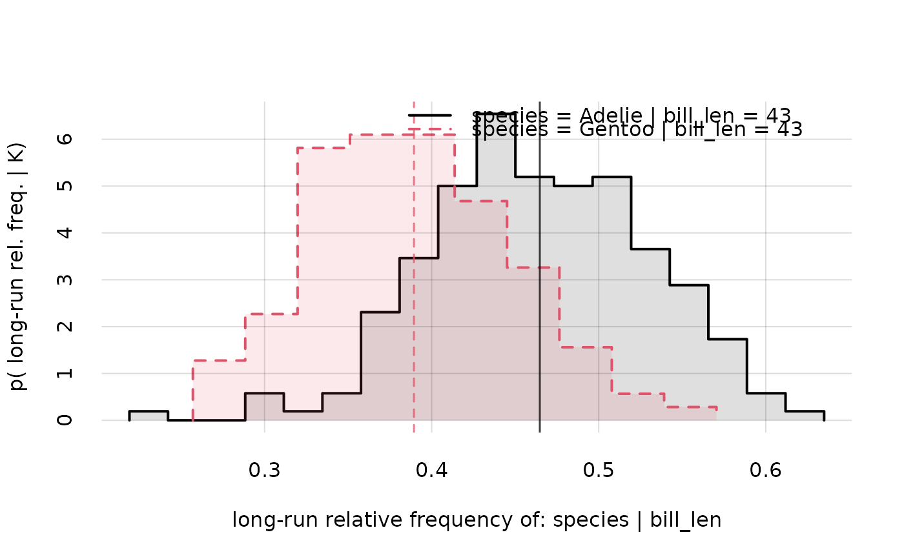

Subset variates of an object of class "prova_pr" (probability)
Source:R/manipulate.R
subset.prova_pr.RdUtility function to exclude some Y or X values from an object of class "prova_pr".
Usage
# S3 method for class 'prova_pr'
subset(x, subsetY = TRUE, subsetX = TRUE, ...)Arguments
- x
Object of class "prova_pr" (probability), obtained with
Pr().- subsetY
Expression, indicating
Yvalues to select from the probability-class object. Note thatsubsetwill be evaluated in the probability-class object, soYvariates can be referred to (by name) as variables in the expression (see the examples).- subsetX
Expression, indicating
Xvalues to select from the probability-class object. Note thatselectwill be evaluated in the probability-class object, soXvariates can be referred to (by name) as variables in the expression (see the examples).- ...
Not used at present, left for method compatibility with
base::subset().
Value
An object of class "prova_pr" (probability), identical to the original object x except for a reduced range of values in some if its Y or X variates
Details
An object of class "prova_pr" (probability), obtained with the Pr() function, holds the probabilities for all possible combinations of values of a set of joint variates Y conditional on a set of joint variates X, together with the revisabilities of these probabilities and some other information. In some cases one may want to exclude some of the values of the Y or X variates. For instance, Y in the probability-class object could include the variate "age" with values from 18 to 100, and one may want to retain only the values from 60 to 80.
Warning
This is a convenience function mostly intended for interactive use, because the non-standard evaluation of arguments subsetY and subsetX can have unanticipated consequences.
See also
Pr(), to generate probability objects.
merge.prova_pr(), to merge two probability objects.
plot.prova_pr() to plot probabilities and quantiles calculated by `Pr()'.
hist.prova_pr() to plot histograms of the probability distributions calculated by Pr().
Examples
## Load the example `K`nowledge object calculated from the "penguins" dataset;
## variates: 'species' and 'bill_len'
K <- Kexample
## Calculate the probability object for the three values of variate 'species',
## given values 43 to 45 of variate 'bill_len';
## this object contains probabilities, quantiles, and other information
probs <- Pr(
Y = data.frame(species = c('Adelie', 'Chinstrap', 'Gentoo')),
X = data.frame(bill_len = c(43, 45)),
K = K
)
probs$value
#> |bill_len
#> species 43 45
#> Adelie 0.4647433 0.08989502
#> Chinstrap 0.1458345 0.24641970
#> Gentoo 0.3894222 0.66368528
## Subset by retaining the values 'Adelie' and 'Gentoo' for species,
## and 44 or less for bill length
newprobs <- subset(
probs,
subsetY = (species %in% c('Adelie', 'Gentoo')),
subsetX = (bill_len <= 44)
)
newprobs$value
#> |bill_len
#> species 43
#> Adelie 0.4647433
#> Gentoo 0.3894222
## Plot these conditional probabilities and their revisabilities
plot(newprobs)

hist(newprobs)
